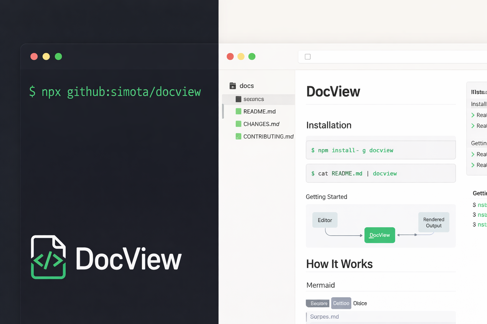

npx github:simota/docview <ディレクトリ> を実行するだけ。
Markdown・YAML・JSON・CSV・Mermaid図に対応したリッチビューワーが、ブラウザにすぐ開きます。

ちょっとした確認のためだけにコミット＆プッシュ。作業が何度も中断される。
エディタのプレビューは狭い。ファイルツリーやサイドバーがある本格的なビューワーが欲しい。
ファイルを保存してからブラウザに切り替えてF5。この繰り返しが集中力を削ぐ。
MarkdownはA、CSVはB、JSONはC、ログはD…ツールを使い分けるのが面倒。
docviewは、ローカルの任意のディレクトリをそのままブラウザで表示するドキュメントビューワーです。 コマンド1本で起動。ファイル保存で即リロード。すべてのファイルを一つの場所で。
以下のコマンドをターミナルに貼り付けるだけ。Node.js 18以上がインストールされていれば、すぐに起動します。
SSE（Server-Sent Events）によるライブリロードで、ファイルを保存した瞬間にブラウザが自動更新。エディタとブラウザの切り替えが不要になり、フローに入り込んだまま作業できます。
npx github:simota/docview でインストールなしに即起動。グローバルインストール（npm i -g docview）にも対応しています。
Markdown（GFM、脚注、KaTeX、Mermaid、GitHub Alerts）、YAML、JSON、CSV、画像ファイルを統一されたビューワーで閲覧できます。ツールを切り替える必要がありません。
開発者がドキュメントを快適に閲覧・編集するために必要な機能を内蔵しています。
SSEでファイル変更を即時反映
OS設定に連動 + localStorage保存
サイドバーに階層表示
複数ファイルをタブで同時表示
ディレクトリ全体をgrep検索
正規表現対応のページ内検索
[!NOTE] [!WARNING] 等を美しく表示
数式・フローチャートをレンダリング
2ファイルを左右に並べて表示
そのファイルへの参照元を表示
レンダリング結果をPNG保存
ネスト構造を折りたたみ表示
Apache/nginxログをテーブル表示・ステータス色分け
数百MBのCSV/ログをチャンク読み込み・省メモリ表示
大容量ファイルもサーバーサイドgrepで高速フィルタ
ターミナルを開いて1行打つだけ。グローバルインストール不要。
数秒でサーバーが起動し、ブラウザが自動で開きます。
ファイルを保存するたびに、ブラウザが自動リロード。
npx github:simota/docview コマンドを実行するだけで、グローバルインストールなしに即座に起動できます。
恒久的に使う場合は npm install -g github:simota/docview でグローバルインストールも可能です。
node --version で確認できます。
Node.jsは nodejs.org からダウンロードできます。
インストール不要。コマンド1本で、あなたのドキュメントがリッチビューワーに変わります。
信頼のオープンソース